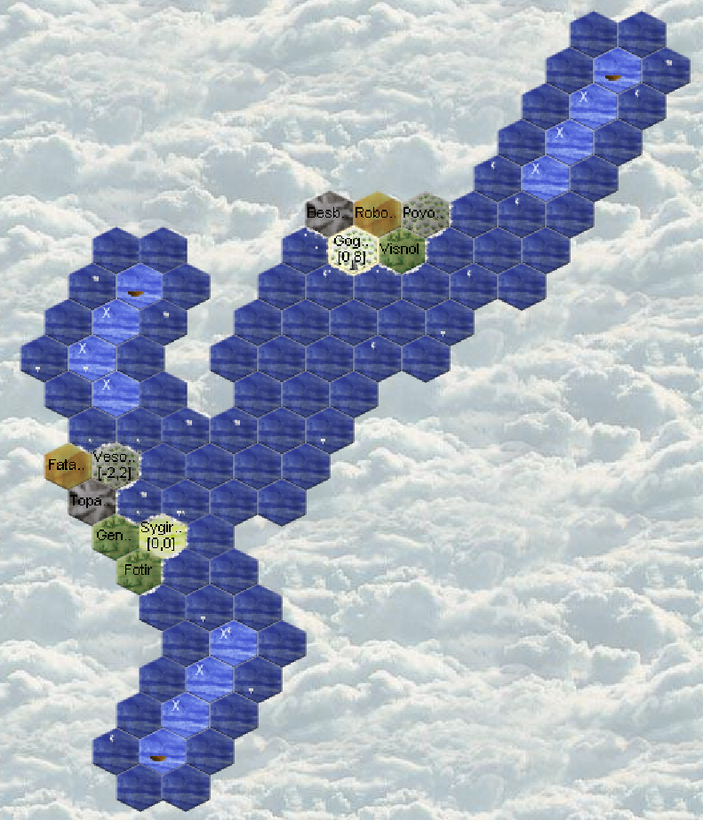

Aquarians: Runde 7
Turn 7
ATTENTION: Your faction will no longer be protected against attacks.
First Groups

No visits from potential neighbors. No coasts on the horizon!
This turn nothing special: Bodmelqart (4qmc) our first sailor reached Level 5. He learned while sailing :).
Actions
330 silver on Sygirfal Entertainers reached level 2, that's good! Next week we should earn more silver! We will recruit: 1 mason to make 2 tradeposts. No visiting neighbor so we'll manage alone. 1 additional forestry Zimrida (hha6) leaves for the halfling, we give him travel silver. While waiting for enough wood, Ugarit (4qmj) learns entertainment. The boats explore, those who can bring back silver do so.
GROUPS
I like creating groups to facilitate temporary or longer agreements. This avoids certain problems with poorly configured HELP later.
Be cautious with groups. They inherit their parent's configuration. If you modify the parent (for example, your basic HELP settings), existing groups will NOT be automatically updated.
In Magellan, you can view all your groups and their configuration under Faction Stats.